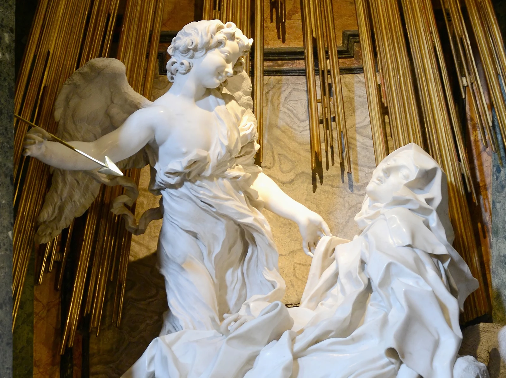
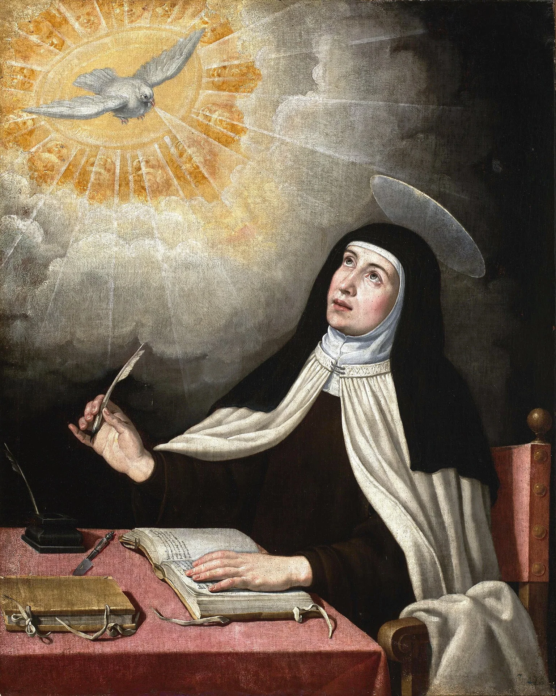
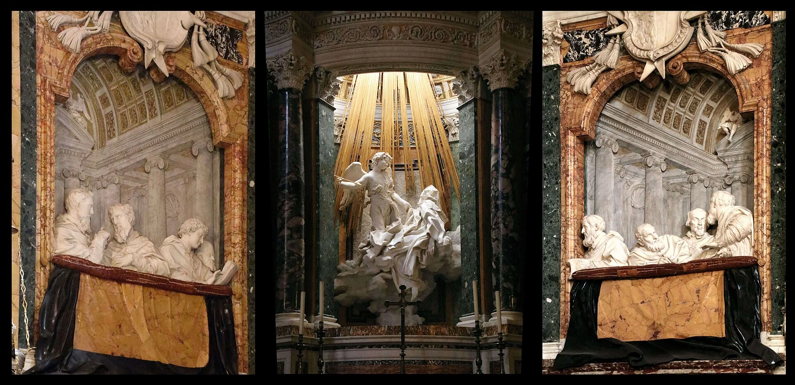
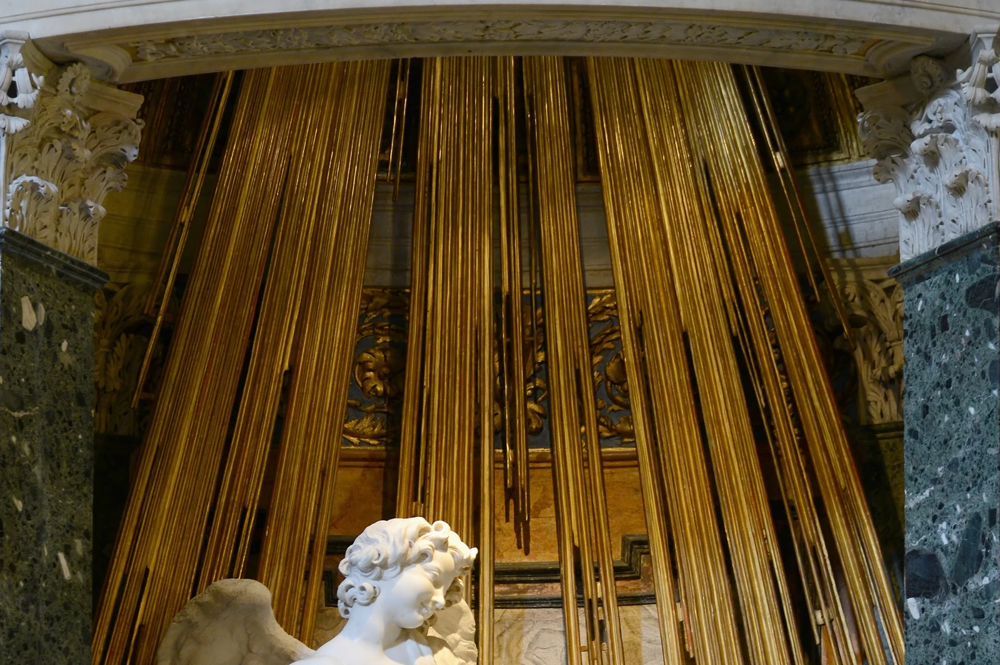
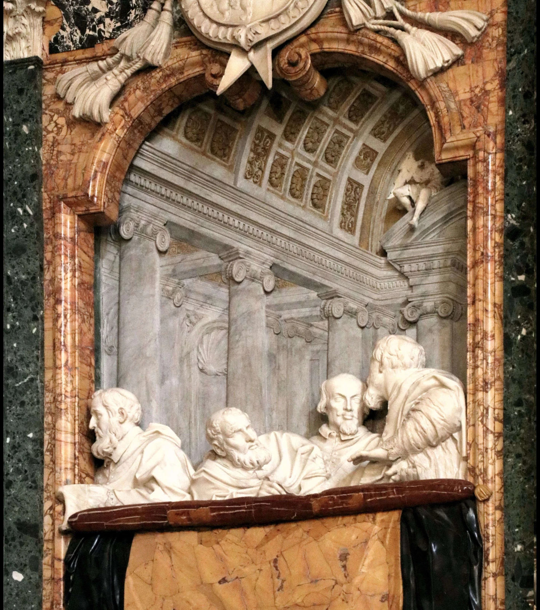

 아직 펼치지 않은 카드
아직 펼치지 않은 카드
1652년 로마, 한 작은 예배당이 문을 열었어요. 조각가 베르니니(Bernini)는 스페인 수녀 테레사가 글로 남긴, 천사를 본 환시를 흰 대리석으로 새기고, 그 위쪽에 창을 숨겨 햇빛이 내려오게 했어요. 제목의 ‘법열’은 이 조각의 이탈리아어 이름 ‘에스타시(estasi)’를 옮긴 말로, 영혼이 사로잡혀 하나님을 바라보는 깊은 기쁨을 뜻해요. 숨은 창의 빛처럼, 어둠 속 조각을 손으로 비춰 드러내 보세요.
로마의 작은 예배당에 하얀 돌로 만든 천사와 수녀님이 있어. 위에 숨은 창이 있어서 진짜 햇빛이 내려온대. 우리도 손으로 빛을 비춰 볼까?
검수 전 시안이에요(기준서 1판). 테레사의 말은 스페인어 원문에서 뜻을 옮겼고, 조각 풀이는 누가 그렇게 보는지 밝혔어요. 상상은 ‘눈 감고 상상해 보기’에만 썼어요.
스페인 아빌라의 가르멜회 수녀 테레사(Teresa de Ávila, 1515~1582)는 고해 신부들의 요청으로 자기 삶과 기도 체험을 자세히 글로 남겼어요. 가르멜회는 중세에 이스라엘의 가르멜산에서 시작된 가톨릭 수도회이고, 고해 신부는 고백을 듣고 신앙의 길을 이끌어 주는 사제예요. 이 『자서전』은 1565년에 마무리되었어요.
책의 29장에서 테레사는, 주님께서 원하셔서 천사를 보는 환시를 몇 번 보았다고 적었어요. 환시는 눈앞에 무언가가 보이는 신비한 체험이에요. 천사가 몸을 가진 모습으로 왼쪽 곁에 나타났대요. 테레사의 글을 영어로 옮긴 피어스(Peers)는 이 일을 1559년, 테레사가 마흔네 살 무렵의 일로 적어요.

“그는 크지 않고 작았으며, 아주 아름다웠다. 얼굴이 불타는 듯 환했다.”
아빌라의 테레사, 『자서전』 29장 · 스페인어에서 이 안내서가 옮김
테레사 수녀님은 자기가 본 신기한 일을 책에 적었대. 작고 아주 예쁜 천사를 보았대.
물어보기테레사 수녀님이 본 천사는 어떻게 생겼을까?
테레사는 세상을 떠나고 40년 뒤인 1622년에 성인으로 선포되었어요. 그로부터 20여 년 뒤, 베네치아 귀족 출신의 페데리코 코르나로(Federico Cornaro) 추기경이 로마의 이 성당에 집안 예배당을 만들기로 하고 조각가 베르니니(Gian Lorenzo Bernini)에게 맡겼어요.
이 성당은 테레사에게서 시작된 ‘맨발의 가르멜회’ 수도자들의 성당이에요. 이탈리아 아틀라스 출판사의 미술 해설에 따르면, 베르니니는 1647년부터 1651년까지 이 일에 매달렸고 예배당은 1652년에 봉헌되었어요. 봉헌은 하나님께 바치는 예식을 올리는 일이에요.

로마의 한 추기경님이 베르니니 아저씨에게 예배당을 만들어 달라고 했대.
물어보기예배당 한가운데에는 무엇이 있을까?
조각 위쪽에는 지붕 모양 장식인 박공이 있어요. 둘째 장면 사진에서 아기 천사들이 새겨진 세모난 장식이에요. 베르니니는 그 뒤에 창을 숨겼어요. 그래서 창은 보이지 않고, 위에서 들어온 햇빛만 금빛 빛살을 따라 흰 대리석 위로 내려와요(아틀라스 출판사 해설, 스마트히스토리).
미술사 해설 누리집 스마트히스토리(Smarthistory)의 해설자들은, 이 빛이 천장 그림 속 성령(하나님의 영)에게서 내려오는 것처럼도 보인다고 설명해요.
박공 뒤 숨은 창에서 내려오는 빛처럼, 손가락이나 마우스로 문질러 비춰 보세요.

베르니니, 「성녀 테레사의 법열」, 1647~1652년, 대리석과 금박 빛살 · 로마 산타 마리아 델라 비토리아 성당, 2015년 사진 · 사진: Alvesgaspar · CC BY-SA 4.0 · 위키미디어 공용
빛이 닿으면 숨은 표시가 나타나요.
다 비췄어요. 해가 드는 날이면 베르니니가 숨긴 창도 이렇게, 위에서 내려오는 빛으로 이 한순간을 드러내요.
2021년 복원 때 복원팀은 이 빛을 거르는 유리에 엉겨 붙은 때를 걷어 냈어요. 그리고 1915년에 갈아 끼운 노란 유리가 처음 유리의 색을 잘 따랐다는 것을 확인하고, 처음 유리틀의 조각과 17세기 유리 조각 몇 점도 찾아냈어요(AP 통신 기사, 크럭스 · 로마시 관광청).
위에 숨은 창이 있어서 진짜 햇빛이 조각을 비춘대. 우리도 손으로 빛을 비춰 볼까?
물어보기빛이 비추니까 무엇이 제일 먼저 보였어?
예배당 양쪽 벽에는 극장의 특별석 같은 자리가 있고, 흰 대리석으로 새긴 코르나로 집안 사람들이 앉아 있어요. 페데리코 추기경과 그의 아버지인 베네치아의 도제, 그리고 집안사람 여섯이에요. 도제는 베네치아 공화국을 이끈 가장 높은 자리예요.
스마트히스토리의 해설자들은 베르니니가 연극을 무척 좋아해 무대 장치를 만들고 희곡도 썼다고 소개해요. 아틀라스 출판사의 해설은 코르나로 집안 사람들이 가운데 장면을 지켜보며 이야기를 나누는 모습이라고 설명해요.

양쪽 벽에 사람들이 극장 구경하듯 앉아 있어. 서로 이야기도 나누는 것 같대.
물어보기양쪽 사람들은 무엇을 하고 있는 것 같아?
눈 감고 상상해 보기
오후의 작은 예배당은 서늘하고 조용해요. 위쪽 어딘가에서 들어온 햇빛이 금빛 빛살을 타고 흘러내려요. 흰 돌로 된 구름이 떠 있는 것 같고, 옷자락이 바람에 흔들릴 것만 같아요. 양쪽 벽의 사람들도 숨을 고르는 듯해요.
눈을 감아 봐. 조용한 예배당이야. 위에서 따뜻한 햇빛이 살살 내려와. 하얀 돌 구름 위에서 천사가 웃고 있어.
다시 보면, 천사와 테레사 위로 금빛 빛살이 쏟아져요. 그 위 박공 뒤에는 보이지 않는 창이 숨어 있어요.
말로 다 할 수 없는 경험을 누군가에게 보여 준다면, 나는 어떤 빛을 비출까요?
햇빛이 비치는 곳에 무엇을 놓아두고 싶어?
마음에 닿는 한 줄을 고르거나 직접 써 보세요. 한 줄을 남기면 이 자리의 도장이 찍혀요. 이 기기에만 저장돼요.
이야기를 보다 궁금해질 만한 것들이에요. 답을 읽거나 짧은 영화로 보세요.



아직 펼치지 않은 이야기예요. 누르면 이야기가 펼쳐지고 색이 돌아와요. 더 알고 싶으면 근거를 따라가 보세요.
다 펼치면, 다음에 오실 때 새 이야기가 찾아와요.
오늘의 뒷이야기는 여기까지예요. 다음에 오시면 새 이야기가 기다리고 있어요.
펼친 뒷이야기 · 누르면 다시 볼 수 있어요
언제 만들었나 크리스천 아이코노그래피와 이 카드 책 앞면은 1647~1652년, 아틀라스 출판사 해설의 제목과 스마트히스토리의 옛 영상 제목은 1645~1652년으로 적어요. 크럭스 기사의 사진 설명은 1653년에 완성되었다고 해요.
창일까 화살일까 테레사는 ‘다르도(dardo)’라고 썼어요. 영어 번역은 ‘창(spear)’으로, 아틀라스 출판사 해설은 ‘금빛 화살’로 옮겨요. 베르니니의 천사가 든 것은 짧은 화살처럼 보여요.
빛은 어디서 아틀라스 출판사 해설과 스마트히스토리는 ‘박공 뒤에 숨긴 창’, 영어 위키백과는 ‘둘레 장식의 둥근 지붕에 숨긴 창’, 크럭스 기사는 ‘작은 둥근 지붕’으로 햇빛이 든다고 적어요.
확인한 날 · 2026년 11월 18일 · 바뀌기 쉬운 정보라 정기적으로 다시 확인해요
로마 시내 산타 마리아 델라 비토리아 성당(Via XX Settembre 17)이에요. 카르멜회 이탈리아 중부 관구 누리집에 따르면 성당은 평일 6:45~12:00와 16:00~19:00, 일요일 9:00~12:00와 16:00~18:00에 열어요.
미사와 기도 시간에는 관람할 수 없고, 안내자와 함께 온 단체는 이어폰을 써 달라고 해요. 입장료 안내는 없어요. 가기 전에 누리집에서 다시 확인하세요.
빛을 비춰 숨은 다섯 곳을 모두 찾으면 카드에 금박이 입혀져요.
아이와 함께 ‘영화처럼 보기’를 끝까지 보면 카드가 채색돼요.
‘처음 만나는 기독교 문화’의 깊은 카드예요. 사람 얼굴이 알아볼 만큼 나오는 사진은 쓰지 않았어요. 카드 단계와 남긴 글은 이 기기에만 저장돼요.
영화처럼 보기 · 약 3분
화면을 누르거나 → 키를 누르면 넘어가요. 그냥 두어도 자막이 저절로 넘어가요.